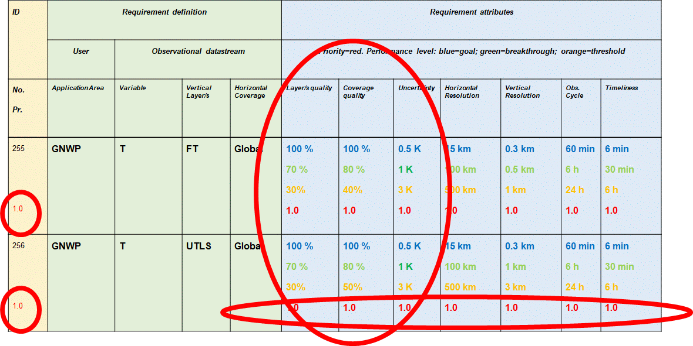

Structure¶
General overview¶
The OSCAR Requirements database is designed as a “flat” (two dimensional) database. It is not structured or collected with (layered) sub databases. That implies that the list of variables contains all variables shown in one table with its definitions, the application area linked to the Earth System Application Category, a Domain and the measurements units to be used. Within the web pages weblinks are provided to subpages or direct links being crosslinks to other sections. Moreover, internal links are provided opening a window with detailed explanations of the chosen item or to start an action (for instance editing or deleting a variable)
Note
the layout of the Graphic User Interface is different for a PoC after login (in editing mode) compared to the standard layout (public mode)
Although the database is presented as one “flat” database, without nested sub-databases the variables themselves are classified, organized in Domains. Each Domain has its subdomains. Also, each variable is representative for specific layers in the atmosphere. For instance, the variable “Accumulated precipitation (over 24 h)” is member of the sub-domain “Clouds and precipitation”, being part of the Domain “Atmosphere”. For this variable the layer may be “Near surface”. For several quantities, like Air Temperature, several layers are associated with this quantity resulting in a set of variables. So, there exist several variables for Air Temperature, each variable associated with another layer.

For several Application Areas (AA) the same variables are nominated but with different quantitative requirements. That implies that such a variable is listed more than once in the list of Requirements, each having their own requirements associated to the particular AA. For instance, the variable “Accumulated precipitation (over 24 h)” is nominated by five different Application Areas within the Earth System Application Category “Atmospheric Applications”.
{kind=link}
In summary, in the web page for OSCAR/requirements two lists of variables are presented:
Variables, providing a list of all (unique) variables, classified per Domain, to be nominated by any Application Area associated with that Domain. Each variable may be associated with several layers.
Requirements, providing a list of the same variables, but associated with only one Application Area and specific layer having its own requirements. As a consequence, this second list is much longer than the first list.
Note
Further details and explanations on Requirements or Variables are given below.
Other relevant “tabs” on this web page are:
Layers (vertical Layers and horizontal Coverages)
Themes (Cross-cutting themes)
Application Areas.
Layers (vertical Layers and horizontal Coverages)¶
The tab Layers provides a list of vertical Layers and horizontal Coverages. The Layers have a Vertical dimension. Each ‘layer’ refers to a range of altitude or depth where a physical variable is measured and a requirement for this variable is applicable. This concept allows assigning different requirements for the same variable depending on the considered altitude or depth. Examples of such layers are “Mid-upper stratosphere”, “Top of the atmosphere” and “Near Surface, at the surface (in the air)”.
The “horizontal coverage” parameter locates where the variable is to be observed in the horizontal dimension. From the list only one entry must be specified. Examples are: Global Land, Coastal areas; Regional, Local and Point. The table lists all ‘horizontal coverage’ types used in OSCAR to further specify where a specific Requirement is applicable, e.g., only over the oceans, at specific points (Airports), regionally or globally.
Select this TAB for a complete overview of all layers and coverages with their definitions and acronyms used in the lists of variables.
Note
For more details about Layers visit this Link.
Themes¶
The tab Themes provides a list with present Cross-cutting themes to show a specific view on a topic / area of interest which is not otherwise covered by domains or the WMO application areas. Themes are used to add additional semantic information (“tagging”) to variables. This can then be used for filtering purposes in the Requirements or Variables table. Examples are Cryosphere and Volcanoes.
Select this TAB for a complete overview of all themes with their areas of interest and associated variables.
Application Areas and Application Categories¶
An Application Area is an activity involving the direct use of observations that allows National Meteorological and Hydrological Services or other organizations to render services related to weather, climate and water, and other environmental events, contributing to public safety, socioeconomic well-being and development in their respective countries. The concept of a WMO Application Area is used in the framework of the WMO Roling Review of Requirements and describes a homogeneous activity for which it is possible to compile a consistent set of observational user requirements agreed upon by community experts working in this area.
Most areas in this list are well described and sorted over the Earth System Application Categories (ESAC). An Application Area is only associated to one ESAC). The name and e-mail address of the Point of Contacts associated to the particular Application Area is provided in this table as well.
The present ESACs and their associated Application Areas are:
Organization of the website¶
After start-up in your browser using the OSCAR primary weblink (https://space.oscar.wmo.int/) you will open the OSCAR homepage:
{kind=link}
This page informs in general how the OSCAR webpages are organized with three entries:
This page also informs on the background of OSCAR in general and it is recommended to consider the items on this page to obtain a good idea on how this web-structure works
To create, edit and modify the variables that are specific for the Application Areas, the tab “Observation Requirements” has to be opened (by clicking on it with your mouse cursor) and you will get a page with the following header providing an overview:
{kind=link}
This page provides a lot of information and additional details on how the database is organized, how it can be browsed and with hyperlinks to the different items within this area.
Some items on this page are relevant to consider first:
In the top right corner, a button is provided indicated as “Login”. By clicking on it you get access to the editing environment of OSCAR/Requirements using your username and password. More details are given further on and in the Cookbook section.
Below the “Login” button a “Quick Search” text field is provided. This field can be used for fast access to specific Application Areas and variable.
There is a note on the Uncertainty. “Uncertainty” is a required quality figure for the variable, to be filled in, which will be explained further on and in the Cookbook
This Uncertainty is expressed as three quantities associated with the variable, each related to different types of requirements: “goal”, “breakthrough” and “threshold”. The definition and explanation for these three types of requirements are given further on and in the Cookbook. Note that the words “breakthrough” and “threshold” are also used in the Manual on the WIGOS (WMO-No. 1160) in association with mandatory requirements.
Important!
It is recommended not to login directly but to take a quick look first to see how the public domain area of this OSCAR web environment is organized at present. So, what is shown publicly to all users (anonymously).
In this header a sub-structure is shown starting with the tab “Overview” (the current page). The other clickable tabs provide direct access to the five essential components of this web environment:
{kind=link}
Application Categories (Earth System Application Category, ESAC)
Application Areas (AA)
Variables (List of all Variables)
Requirements (List of all Requirements)
Layers (List of vertical Layers and horizontal Coverages)
To create of modify variables it is important to know that only those variables associated with the application area (AA) may be edited that the PoC is authorized for. To find the appropriate AA one should open first the link to “Application Categories”, then select the particular ESAC (first column), e.g. “2. Atmospheric Applications” or directly the Application Area (second column). For “2.8 Aeronautical Meteorology”.you will see on top:
{kind=link}
This page shows “Details” for this AA and also the Focal Point (Point of Contact: naam and e-mail). On the right all the “Variables measured in this Application Area” are shown. You may select in this box a specific variable, e.g. “Wind gust” and will get an overview within the List of Variable environment with all requirements stated by all AA. Such an overview is useful to intercompare requirements among the AAs.
Alternatively, you may scroll down in the “2.8 Aeronautical Meteorology” page and see a table with all variables and their requirements stated by this Application Area only. In this example you may find for example “Wind gust”.
{kind=link}
Note that the variable with its requirements is indexed with an “Id”-number (for “Wind gust”: 763). This number relates to the list of requirements (i.e. a variable with requirements stated for that particular AA) and not to the “Id”-number (for “Wind gust”: 205) that is used for the variable itself as shown in the List of Variables (there are several AAs linked to this variable, each with its own requirements Id). So, the “requirements Id” differs from the “variable Id”.
Apart from reading out the table, you may also select the requirements-id (by mouse clicking on it). You will see an overview of that requirement (e.g. Requirement #763 for the application area Aeronautical Meteorology). A full overview is provided with all details, shown in the table as well.
The table on the bottom of the Applications Area (AA) page after selecting the particular AA (e.g. “2.8 Aeronautical Meteorology”) shows a list of requirements, one per row and only for one single variable (e.g. 763 “Wind gust”). The table consists of a large number of columns (21 in total, from “Id” up to “Performance Comment”)
Note: to get to the last column you have to scroll down in your browser and then use the horizontal slide bar to move it to the right and then scroll up the vertical slide bar to its previous position.
There are alternative ways to get the requirements table for the specific application area:
By selecting the Variables tab in the sub-header and then click on the “Filter table”(top right):
Now you may select particular items (e.g. “2.8 Aeronautical Meteorology” under Application Area(s)) by clicking a check box and finally to click the “Refresh Table” at the bottom of this selection box:
By selecting the Requirements tab in the sub-header and then follow the same procedure as above
{kind=link}
{kind=link}
Note
“Filter instructions” (see link on that webpage) give more information on how and what to filter.
You may download the selection (or the full table) by clicking the “Export” button (next to the filter button). An MS Excel file in .xlsx format is requested for download. Useful for local applications. Uploading a datafile is not possible.
See for more information on the areas Variables, Requirements and Layers the sections below.
Variables¶
Each requirement for an application area is expressed quantitatively as a specific physical variable to be observed, in a specific domain (vertical layer/s and horizontal coverage), with a performance level quantified in terms of up to eight criteria: uncertainty, horizontal resolution, vertical resolution, observing cycle, timeliness and stability, as well as the recently added criteria “layer/s quality” and “coverage quality”, including “relative priority” (ATP) for each of these criteria. To select a full list of all variables you must mouse click on the sub-header theme “Variables”:
{kind=link}
All variables as defined so far are presented, each with its own variable Id. Each row shows a unique variable and also the several Application Areas associated with this variable. As explained above you may select a set of variables using the “Filter table” button (For instance to select a set of variables defined for an Application Area). The table has eight columns, indicated by
Id |
Variable name |
Domain |
Measure- ment unit |
Defi- nition |
Uncer- tenty Units |
Required for App. |
Layers |
These headers stand for the following descriptions:
- Id
Variable identification number (an index)
- Variable
name Name of the variable (see Definition)
- Domain
The geophysical Domain or sub-domain, e.g. Land Surface (see under the “Layers” section for further explanation)
- Measurement unit
The SI unit, used for the variable
- Definition
A definition for this variable with some extra details to prevent confusion with other comparable variables
- Uncertenty Units
The SI unit, the uncertainty associated with the variable reported value (should be the same as the measurement unit, or relative in percentages, %)
- Required for App.
The list of Application Areas, the variable is required.
- Layers
The layers for which the variable is associated with (Domain, vertical layer), e.g. Terrestrial/Land surface, Atmosphere/Near Surface (see under the “Layers” section for further explanation)
Guiding principles for the list of variables¶
The list of variables is guided by the following principles:
Avoiding redundancy between equivalent variables;
Adopting a unique designation for a given physical variable;
Selecting elementary variables describing basic physical properties of the environment rather than complex variables that can be derived from other variables;
Physical variables should be defined in a “technology free” manner and do not necessarily correspond with the output of a particular instrument. (See Figure below).
Each variable is documented with:
A standard designation;
A definition, relying as much as possible on community agreed definitions and/or the WMO Guide on Instruments and Methods of Observation (WMO-No. 8);
The spatial domain where the variable needs to be observed, i.e. the range of atmospheric layers (Lower Troposphere (LT); Higher Troposphere (HT); Lower Stratosphere (LS); Higher Stratosphere and Mesosphere (HS&M); Total column (TC), or Troposphere column (TRC)), or oceanic layers (Deep ocean; Upper ocean), or as a surface area (over land, over sea, in costal zone), or terrestrial layers (e.g. root region, deep soil, etc.), or outer space layers (e.g. ionosphere, on the GEO orbit, at Lagrange Point L1, or sun’s surface);
The physical unit of the measurement, and the unit utilized for expressing its accuracy. For any given physical variable there should be only one unit of measurement and one unit for the accuracy. Therefore, if different units have to be used when a variable is observed as a profile and as a total column, then the 3D variable and its total column should be regarded as different variables (e.g. Ozone Total Column is listed separately from Ozone) because one is measured in Dobson Unit while the other is in mol/mol).
{kind=link}
The main scope of the observing requirements is the physical variables needed to characterize and model the environment (green), as opposed to derived products (pink), or instrument output (blue). There is however no clear cut between these three broad categories.
Requirements¶
To select a full list of all requirements you must mouse click on the sub-header theme “Requirements”:
{kind=link}
All requirements as stated by the several application areas are presented, each with its own requirements Id. Each row shows a unique set of requirements. As explained above you may select a set of requirements using the “Filter table” button (For instance to select a set of requirements defined for an Application Area). The table has 20 columns, indicated by
1 |
2 |
3 |
4 |
5 |
6 |
7 |
Id |
Variable |
App Area |
ATP |
Layers |
Layers Quality |
Uncertainty |
8 |
9 |
10 |
11 |
12 |
13 |
14 |
Hor Res |
Ver Res |
Obs Cyc |
Stability /decade |
Coverage |
Coverage Quality |
Conf Level |
15 |
16 |
17 |
18 |
19 |
20 |
Source |
General Comment |
Application Area Comment |
Horizontal Coverage Comment |
Observation Comment |
Perferformance Comment |
- Id
Requirements identification number (an index)
- Variable
Name of the variable (see Definition in Variable)
- App Area
Application Area (see Application Areas and Application Categories)
- ATP
Application-dependent Technical Priority
- Layers
Domain and layers (see under the “Layers” section for further explanation)
- Layers Quality
Level of performance if domain/layer is not fully covered
- Uncertainty
The uncertainty associated with the variable reported value (should be in the measurement unit, or relative in percentages, %)
- Hor Res
Horizontal Resolution (distance)
- Ver Res
Vertical Resolution (distance)
- Obs Cyc
Observing Cycle (a period or interval, expressed in time)
- Timeliness
Delay in receiving data reports after observation
- Stability / decade
Long term stability, expressed as uncertainty over a decade
- Coverage
Representation area from global to point (see under the “Layers” section for further explanation)
- Coverage Quality
Level of performance if coverage is not fully covered
- Conf Level
Confidence level of the stated requirements based on experiences
- Source
Background reference to demonstrate or prove the requirements
- General
Comment Comment section: General comment
- Application Area Comment
Comment section: Application Area related
- Horizontal Coverage Comment
Comment section: Coverage related
- Observation Comment Comment
Comment section: Observation related
- Performance Comment
Comment section: Performance related
For eight type of requirements performance levels are quantified (see performance levels for further explanation):
Layer/s Quality
Uncertainty (see note below)
Horizontal resolution
Vertical resolution
Observing cycle
Timeliness
Stability.
Coverage Quality
Notice that for some headers a simple explanation is provided to be obtained by clicking on it:
{kind=link}
Domains, Layers and Coverages¶
To reduce further complexity in the set of variables, a logical structure is introduced. The primary backbone of this structure is the set of domains. These domains are chosen in line with the geophysical areas well known in meteorology, climatology, oceanography and the areas of interest within WMO. The selected domains are defined by Atmosphere, Ocean, Terrestrial, and Outer Space.
There is also a 5th Domain defined, called Cross-cutting, intended for all other items not to be within one of these five domains.
For the domains sub-domains are defined usually in line with areas of interest,
In practice a particular variable (e.g. air temperature) will have different requirements when applicable for the different sub-domains, so the use of domains is an essential item within OSCAR and great care should be taken in selecting a domain when a new variable is introduced.
Within these domains Layers are introduced. The structure based on vertical oriented layers is chosen because this distinction within the geophysical areas is in common practice and therefore the best solution (so altitude or depth dependent, like e.g. Troposphere, Stratosphere and “Near the surface” for Atmosphere). To avoid confusion, it is important to be aware of the difference between Atmosphere/Near the surface, Terrestrial/Land Surface and Ocean/Sea Surface. Relevant here is the association of the variable: with air, ground or water.
Other layers are defined for areas with a horizontal dimension. This dimension is associated with Coverage. We may have Global Coverage, regional coverage, but also coastal areas down to Point. Point is a special issue and used if the variable is valid for one specific location (e.g. dedicated locations at airports). Areas for which variables are valid to be representative for are for instance Sub-regional (area of magnitude 1000 × 1000 km) and Local (area of magnitude 100 × 100 km).
For example, the variable Precipitation (amount, accumulated over 24 h) and representative for the amount fallen on the surface is classified by:
{kind=link}
Vertical Layers¶
The domains with the vertical oriented layers are defined by:
Horizontal dimension¶
The “horizontal coverage“ parameter locates where the variable is to be observed in the horizontal dimension. Exactly one entry must be specified. This parameter is largely determined by the size of the covered area, i.e. from global to point. A simple structure is introduced, but it is relevant to choose for the most appropriate option (only one of eight):
“Layer” and “Coverage”¶
The geographical domain of applicability of a requirement is characterized by two attributes:
“Layer”, which qualifies a vertical range only,
“Coverage”, which typically qualifies a horizontal domain. The “Coverage” can be global, regional, local (e.g. at airport locations), or limited to certain areas such as the oceans, land surface, equatorial or polar regions, ionosphere, etc.
It is recalled that indicating a “Layer” is relevant when both the variable and the requirement itself depend on the vertical coordinate. For instance, atmospheric temperature being a 3D variable and since the requirement on atmospheric temperature is more stringent in the troposphere than in the high stratosphere, there is a need to register two different requirements for these two layers. On the contrary, a requirement for “Cloud Top Height” has no “layer” because the variable “Cloud Top Height” is not a 3D variable (not a function of height) and a fortiori the requirement for this variable is not dependent on height.
Layer/s Quality¶
These fields are intended to indicate the level of quality, associated to the layers as indicated. At present, no clear recommendation on completing this filed is defined
Coverage Quality¶
These fields are intended to indicate the level of quality, associated to coverage as indicated. At present, no clear recommendation on completing this filed is defined
Application-dependent Technical Priority (ATP)¶
Each requirement (for a geophysical variable) should be prioritized to indicate its relative importance for an Application Area (Application-dependent Technical Priority – ATP). Within each requirement, each criterion (attribute) should also be prioritized (Relative priority) to indicate its relative importance for the specific requirement. This is a value in including the notion of prioritization in the RRR process. If no priority is given, it means all stated requirements have equal priorities when establishing the expected level of confidence. Knowing these priorities will help the Application Area Points of Contact to do the gap analysis with focus on the critical variables to be observed. Moreover, this could contribute to identifying core and recommended WIGOS data in the WMO Unified Data Policy.
The mechanism calls for associating priorities for all requirements that get generated through the RRR process and archived in the OSCAR system. The priorities are meant for:
The Requirement itself (e.g., does an application value more the near surface temp. than moisture?)
The attributes of the Requirement (e.g., for a given Requirement, does the spatial resolution more than vertical resolution?)
We call these priorities the Application-dependent Technical Priorities (ATP) and should be defined to convey, for a given application area, the relative importance between the requirements and, for a given requirement, the relative importance between the attributes.
These priorities (or weights) should be a numerical value between 0 and 1, that can be used for optimizing network design purposes. They should be defined with a minimum level of granularity i.e., enough to be useful but not too complex to assign.
ATP values are weights, defined in the table below
Priority Value (weight) |
Description |
|---|---|
1.0 |
Core (1): The requirement (or criteria) is absolutely critical for the application, so meeting at least the breakthrough requirements where technical solutions exist, must be the highest priority. Where breakthrough requirements are not already being met by existing capability, research and development plans should be actively seeking to address the gap as a high priority |
0.8 |
Recommended (0.8): The requirement (or criteria) is essential for the application so should meet at least the breakthrough requirements where technical solutions exist. Where breakthrough requirements are not already being met by existing capability, research and development plans should be actively seeking to address the gap, but with a lower priority than those requirement identified as Core |
0.6 |
Useful (0.6): The requirement (or criteria) is useful for the application, but not absolutely essential. Meeting the breakthrough requirements where technical solutions exist, should be a medium priority, but meeting the threshold requirement should be a high priority. Where threshold requirements are not already being met by existing capability, research and development plans should be actively seeking to address the gap, but with a lower priority than requirements identified as Recommended or Core |
0.4 |
Marginally useful (0.4): The requirement (or criteria) is not essential for the application. Meeting the threshold requirements where technical solutions exist, should be a low priority. Where threshold requirements are not already being met by existing capability, research and development plans should not be actively seeking to address the gap, but opportunities arising should be considered |
0.2 |
Not currently useful (0.2): There is no current identified use of the requirement (or criteria), but some use may be identified in the future. |
0.0 |
Not useful (0): There is no current or future identified use of this requirement (or criteria). |
Note: priorities for requirements and their attributes are sometimes scientifically inter-connected. In other words, the specific requirement (and associated priority) for the attributes (of vertical resolution, uncertainty, horizontal resolution, timeliness, observing cycle, etc.) sometimes vary depending on the ranges of the other attributes. It is important to note that this inter dependency applies to both priorities and requirements ranges. Despite this caveat, it is believed however that the requirements’ ranges (and priorities) are still very important and informative to the observing systems and networks owners. They should be considered as first degree assessment of ranges of requirements and their priorities, with the caveat that there are nuances related to the fact that there are spatial, temporal and situational variations of the requirements and priorities.
An eample of how the priorities will ber show:
 example of how ATP will be indicated
{kind=link}
Performance levels¶
Each requirement from a WMO application area for observation of a physical variable includes a description of the required performance level as appropriate. For each criterion, three values are specified, representing respectively the “threshold”, “breakthrough” and “goal” levels of performance. These levels may be described as follows:
The “threshold” is the minimum requirement to be met to ensure that data are useful. If this performance level is not met, reporting such data should be avoided to prevent reduction of the quality of the end products.
The “breakthrough” is an intermediate level between “threshold” and “goal” which, if achieved, would result in a significant improvement for the targeted application. Note that the concept of a “breakthrough” level is different to the concept of the optimum cost-benefit level, since it refers to a significant increase in the value or benefit of an observation, without reference to the costs involved.
The “goal” is an ideal requirement above which further improvements are not necessary
In fact these performance levels are based on cost-benefit considerations. User requirements are expressed in a technology-free manner, and therefore cost free. However, decisions on design and implementation of observing systems must take account of cost. The relationship between user requirements, as defined by the RRR process, and decisions on design and implementation of observing systems based on cost-benefit considerations is therefore important. The cost-benefit curve for a single observing system, in the context of a single application, is illustrated schematically in the figure below. It is assumed that “benefit” can be estimated quantitatively and also that it can be expressed in financial terms. The cost-benefit curve has the following generic characteristics:
A significant cost must be incurred before any significant benefit is derived. Beyond this point (B), additional cost then results in increasing benefit. However, a point (A) is reached beyond which additional cost does not bring any significant benefit;
The “maximum” and “minimum” requirements of the CBS method map on to points A and B respectively.
The cost-benefit curve will (normally) first cross the line of equal cost-benefit at the “break even” point. It represents the point above which we can make a (business) case for implementing the system.
The optimal point, representing the highest ratio of benefit to cost, is also shown.
{kind=link}
Cost-benefit curve for an observing system.
Note that the point of optimal cost-benefit represents a benefit (and cost) that is, in general, lower than the point of “maximum requirement”. This is important; it is often assumed that we should be striving to meet the maximum requirement. Whereas this analysis shows that a system meeting “maximum” requirements is likely to deliver a level of benefit in a region of diminishing returns. Also a system’s performance must exceed the ”minimum” requirement before it is likely to be cost-effective.
To summarize:
significant cost must be incurred before any significant benefit is derived;
the unit cost-benefit slope should be exceeded for cost effective systems;
optimal cost-benefit occurs after minimum but before maximum user requirements are met; and,
considerable cost can be incurred in moving from optimal cost-benefit to meeting maximum user requirements.
Interpolated breakthrough requirements
One systematic problem with the Database is a defective understanding of the terms “threshold”, “breakthrough” and “goal”.
The “goal” is the most stringent requirement. It is an ideal value above which further improvement of the observation would not bring any significant improvement in performance for the application in question. The goals will evolve as the application make progress and develop a capacity to make use of better observations.
The “threshold” is the minimum requirement that has to be met to ensure that data are useful. Below this minimum, the benefit does not compensate for the additional cost involved in using the observation.
Within the range between threshold and goal requirement, the observation becomes progressively more useful. The “breakthrough” is an intermediate level between “threshold” and “goal“ which, if achieved, would result in a significant improvement for the targeted application. The breakthrough level may be considered as an optimum from a cost-benefit point of view, when planning or designing observing systems.
Stating the breakthrough requirement (B) is a frequent source of misunderstanding, especially when a true step-improvement moving from the threshold (T) to the goal (G) does not exist. Since in any case the breakthrough indicates what is aimed at, to indicate a breakthrough requirement is useful in any case, even if interpolated. The problem is that, in the current Database, the breakthrough requirement B, when missing, is usually interpolated by the equation B = \(G^{2/3} \times T^{1/3}\), leading to a value too close to the goal (i.e., benefit of B approaching saturation). A quadratic average (B = \(G^{1/2} \times T^{1/2}\)) is favourable instead. Also interpolated values may not have too many significant digits whereas, for requirements, rounded figures are more appropriate. Example: with T = 10 and G = 1 we propose the sequence 10 / 3 / 1, in stead of e.g. 10 / 2.154 / 1.
The different performance levels and the ATP are shown in several colours:
{kind=link}
Uncertainty¶
The uncertainty is associated with the variable value as reported. It shall be in the same measurement unit as the variable, or relative in percentages (%). This uncertainty shall the result of a uncertainty budget calculus. This budget will contain:
Measurement uncertainty due to the uncertainty of calibration (with traceability to SI)
The uncertainty caused by the environmental impact at the location of measurement (impact by artificial of natural objects like buildings and trees)
The uncertainty due to environmental impacts caused by larger scale inhomogeneities (typical for land surface and mountainous areas and coastal areas)
The uncertainty caused by larger scale inhomogeneities (e.g. in case the variable represents a 100 × 100 km area)
Uncertainties caused by data processing.
The uncertainty characterizes the estimated range of observation errors (Root-Mean-Square-Error - RMSE) on the given variable, with a 68% confidence interval (1 σ, 1 × standard deviation – or standard uncertainty), which is not in line with international standard practice. Providers of observations should interpret the RRR uncertainty requirement as a mixture of standard error (bias) and random error, combined in the root-mean square sense. The international standard practice is to use 95% confidence interval which is 2σ for a standard normal distribution. It was adopted by WMO by mutual agreement with the International Bureau of Weights and Measures (BIPM) and was developed by the Joint Committee for Guides in Metrology (JCGM). It is published as Evaluation of measurement data Guide to the expression of uncertainty in measurement (JCGM 100, 2008), GUM, a document shared by the JCGM member organizations (BIPM, the International Electrotechnical Commission (IEC), the International Federation of Clinical Chemistry and Laboratory Medicine (IFCC), the International Laboratory Accreditation Cooperation (ILAC), the International Organization for Standardization (ISO), the International Union of Pure and Applied Chemistry (IUPAC), the International Union of Pure and Applied Physics (IUPAP) and the International Organization of Legal Metrology (OIML). Further explanation and details on its use in meteorology are provided in the Guide to Instruments and Methods of Observation (WMO-No. 8), Volume I, Chapter 1, 1.6. Within the context of this Guide) and other related documentation, the term uncertainty is aligned to the International Vocabulary of Metrology – Basic and General Concept and Associated Terms, JCGM 200:2012 (VIM). These publications define Expanded Uncertainty as a quantity defining an interval about the result of a measurement that may be expected to encompass a large fraction of the distribution of values that could reasonably be attributed to the measurand, at a typical 95% confidence level. Within INFCOM this is the definition used when referring generally to uncertainty, rather than RMSE (68% confidence level) expressed here. It is important to take this difference of meaning into account when comparing similar information between OSCAR and INFCOM. It is also noted that most reputable manufacturers of instruments, also comply with the GUM, however, this needs to be checked on a case-by-case basis.
To analyse the stated requirements, i.e. within the capabilities analyses, uncertainty, calculated in terms of Root Mean Square Error (RMSE) or standard deviation is calculated as follows:
RMSE = \(\sqrt{\dfrac{\sum_{}^{}{{RMS_p}^2 \ \times \ nb\_ obs}}{total\_ nb\_obs}}\)
Where
- RMS
RMSp stands for quality of observations in terms of a Root Mean Square Error (RMSE) for a given platform for the considered variable, instrument type, geographical box and domain expressed in the units of the considered variable. Statistics will be provided by a monitoring centre in the form of RMSp (Obs - First Guess) for each individual platform. RMS (Obs - First Guess) is a good monitoring measure, but it does not lead directly to a measure of observation error, so it cannot directly compare with the user requirements for accuracy. So if better estimates of uncertainties are available these should be preferred and those values stored in the database instead.
- nb_obs
Number of observations received from a given platform for the considered variable, instrument type, geographical box and domain by the monitoring centre during the considered monitoring period.
- total_nb_obs
Total number of observations received for the considered variable, instrument type, geographical box and domain by the monitoring centre during the considered monitoring period = \(\sum_{}^{}{nb\_ obs}\).
Resolution¶
Horizontal Resolution (Hor Res), and
Vertical Resolution (Ver Res)
The word Resolution is commonly used for satellite imagery where the pixels of the image represent a certain area. Such pixels can be round shaped or a square. Resolution can be regarded as the distance between the centres of neighbouring areas representing these pixels, or as the width or diameter of such an area. For point based in-situ observations, the reported values will also represent a specific area. In case of networks, consisting of observing sites (stations), their density can be converted into a resolution with dimension length. To obtain such distance one should calculate the median value of all distances between all neighbouring stations of that network.
Although Resolution and Coverage are correlated, coverage is typically associated with an area (or point) for which application output (e.g. a forecast) is associated with, resolution is typically associated with the density of observations with a specific area to be used for that application. Understanding vertical resolution, a series of sequential observations reported by a radiosonde or by an aircraft in ascending or descending mode can be regarded with mutual distances between the measurement points of observation (and with neglectable time intervals). These distances can be regarded as vertical resolution.
Horizontal resolution often reflects the intention of integrating over large areas. However, for certain cases, specifically those of parameters of fractal nature, the observation needs to be performed at the scale of the phenomenon, thus the (spatially-integrated) requirement is not suitable to serve as input for satellite/instrument planning purposes.
To analyse the stated requirements, i.e. within the capabilities analyses, Horizontal Resolution and Vertical Resolution are calculated as follows:
Where
- HR
Average Horizontal Resolution (km) for the considered variable, instrument type, geographical box and domain.
- VR
Average Vertical Resolution (m) for the considered variable, instrument type, geographical box and domain.
- Box_area
Total area in km2 of the considered geographical box.
- Nb_platforms
Total number of platforms that have been reporting good observations in the considered box during the considered period for the considered variable, instrument type, and domain.
- highest_pt
Altitude or depth (m) of the highest point of an individual profile report.
- lowest_pt
Altitude or depth (m) of the lowest point of an individual profile report.
- nb_levels
Number of levels of a particular profile observation.
Observing cycle¶
Observing cycle is a period or interval, expressed in time. It is the time interval between two reported sequential observations.
For the observing cycle the figures, quoted in the decimal metric system, should be recognisable (e.g., 0.1 h ≈ 5 min, 0.25 h = 15 min, 0.5 h, 1 h, 2 h, 3 h, 6 h, 12 h, 24 h, 168 h = 1 week, 720 h = 1 month, etc.).
A typical problem with the observing cycle is that too often the figure reflects the practise of integrating over long time span whereas, for the purpose of setting observational requirements, the figure must account for the intrinsic parameter variability (e.g., controlled by the diurnal cycle).
To analyse the stated requirements, i.e. within the capabilities analyses, Observing cycle is calculated as follows:
Where
- period_length
Total monitoring period (time).
- total_nb_obs
Total number of observations received for the considered variable, instrument type, geographical box and domain by the monitoring centre during the considered monitoring period = \(\sum_{}^{}{nb\_ obs}\)
Timeliness¶
Timeliness is defined as the delay in receiving data reports (at the GTS hub) after observation (true observation time). It is assumed that communication delays over the GTS are of minor significance (one minute or less).
For the delay of availability (or timeliness), the figures, quoted in the decimal metric system, should be recognisable (e.g., 0.1 h ≈ 5 min, 0.25 h = 15 min, 0.5 h, 1 h, 2 h, 3 h, 6 h, 12 h, 24 h, 168 h = 1 week, 720 h = 1 month, etc.).
To analyse the stated requirements, i.e. within the capabilities analyses, Timeliness is calculated as follows:
Timeliness = \(\dfrac{\sum_{}^{}{(reception\_ time\ - \ observation\_ time)}}{total\_ nb\_ obs}\)
Where
- reception_time
Time of receipt at the monitoring centre of an individual observation.
- observation_time
Time of the observation for an individual observation.
- total_nb_obs
Total number of observations received for the considered variable, instrument type, geographical box and domain by the monitoring centre during the considered monitoring period = \(\sum_{}^{}{nb\_ obs}\).
Stability / decade¶
Stability is defined here as the maximum permissible cumulative effect of systematic changes of the measurement system, to allow long-term climate records compiled from assorted measurement systems – percentage change per decade. Long term stability, expressed as uncertainty over a decade. In fact, the criterion on uncertainty already contains short- and long-term stability. Stability figures can be expressed in terms of drift (continuous growing bias) or as fluctuations (over years). Long term stability expressed in decades is a requirement to be able to interpret long term climate records, taking the common uncertainty into account but also the uncertainty over years (past and future). In fact, long term stability is a specific criterion, part of uncertainty budget, but dedicated to long terms (decades).
Confidence level (Conf Level)¶
Confidence level of the stated requirements based on experiences. Although the requirements are well defined and endorsed, long term experience with the quality of these reported variables informs about the feasibility of these requirements. In fact, the confidence level is more or less an indication of the expected achievability of this requirement and an indication for further necessary improvement.
The four possible values to be entered are relatively subjective:
firm,
tentative,
reasonable,
speculative
Source¶
Background reference to demonstrate or prove the requirements. Source refers to the primary documentation containing the basic arguments and conclusions that underly (or prove) all stated requirements. This documentation should be available as public documents. Reference to expert teams or single persons only should be avoided. This source documentation can be used to argue and understand the stated values expressed as requirements for the variables. Without these underlying evidences, the stated values cannot be argued with confidence. It is important to prove the reliability of any requirement based on documented and publicly available evidences in the first place to convince users to follow the stated requirements.
Comments¶
To avoid a confusing mixture of comments, five comment sections are introduced so far:
General Comment: General comment
Application Area Comment: Application Area related
Horizontal Coverage Comment: coverage related
Observation Comment: observation related
Performance Comment: Performance related
It is advised to place comments in all sections to provide a better understanding of the stated requirements for the user. The text may be freely chosen but should be clear for every user to understand.
Goto top
0.1 (2024-09-14)
JPM
2024-08-31 17:10 CEST
TEST